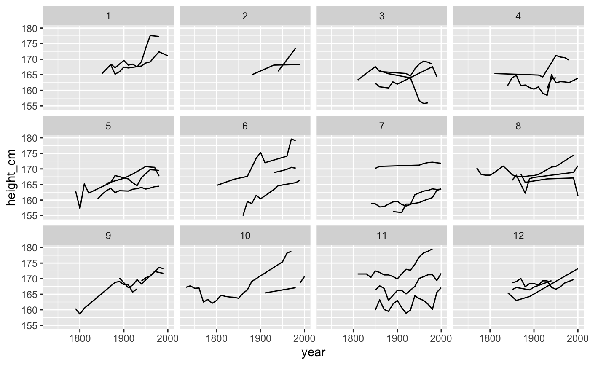
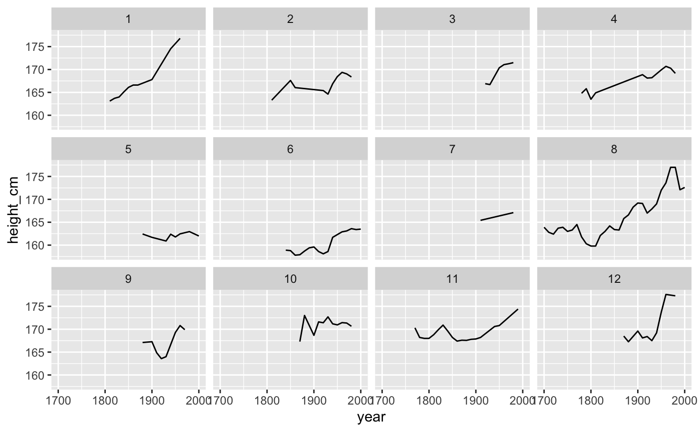

facet_sample.RdFacet data into groups to facilitate exploration
facet_sample(n_per_facet = 5, n_facets = 12, nrow = NULL, ncol = NULL, scales = "fixed", shrink = TRUE, strip.position = "top")
| n_per_facet | Number of keys per facet you want to plot. Default is 5. |
|---|---|
| n_facets | Number of facets to create. Default is 12 |
| nrow | Number of rows and columns. |
| ncol | Number of rows and columns. |
| scales | Should scales be fixed ( |
| shrink | If |
| strip.position | By default, the labels are displayed on the top of
the plot. Using |
a ggplot object
library(ggplot2) ggplot(heights, aes(x = year, y = height_cm, group = country)) + geom_line() + facet_sample()ggplot(heights, aes(x = year, y = height_cm, group = country)) + geom_line() + facet_sample(n_per_facet = 3, n_facets = 12)